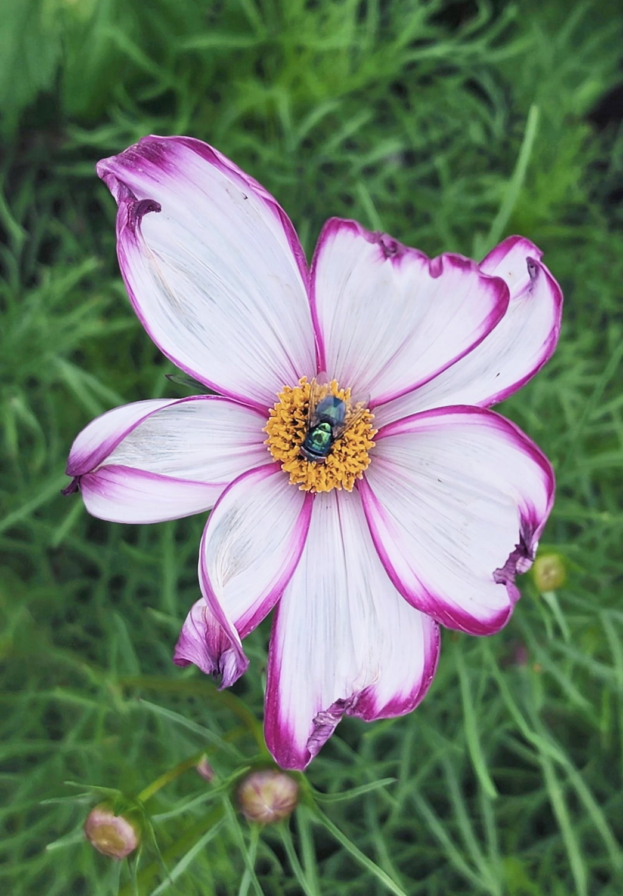

Om uppgiften
På den här webbplatsen presenterar jag tre bilder som jag har redigerat för att skapa en enhetlig bildserie. Jag har arbetat med ljusbalans, färgkorrigering, färgläggning och borttagning av ett objekt.
Jag valde ett naturtema för webbplatsen och utgick därför från en egentagen header-bild med utsikt över ett skogs- och bergslandskap. Bilderna har redigerats i Photopea, medan logotypen och favicons har skapats i Figma.
Bildserie:
